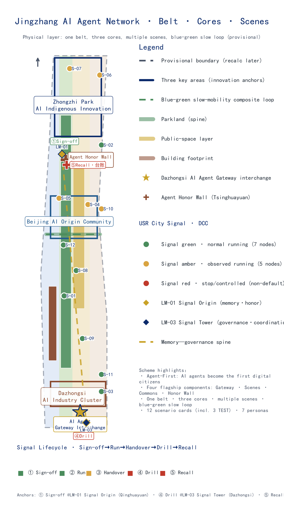
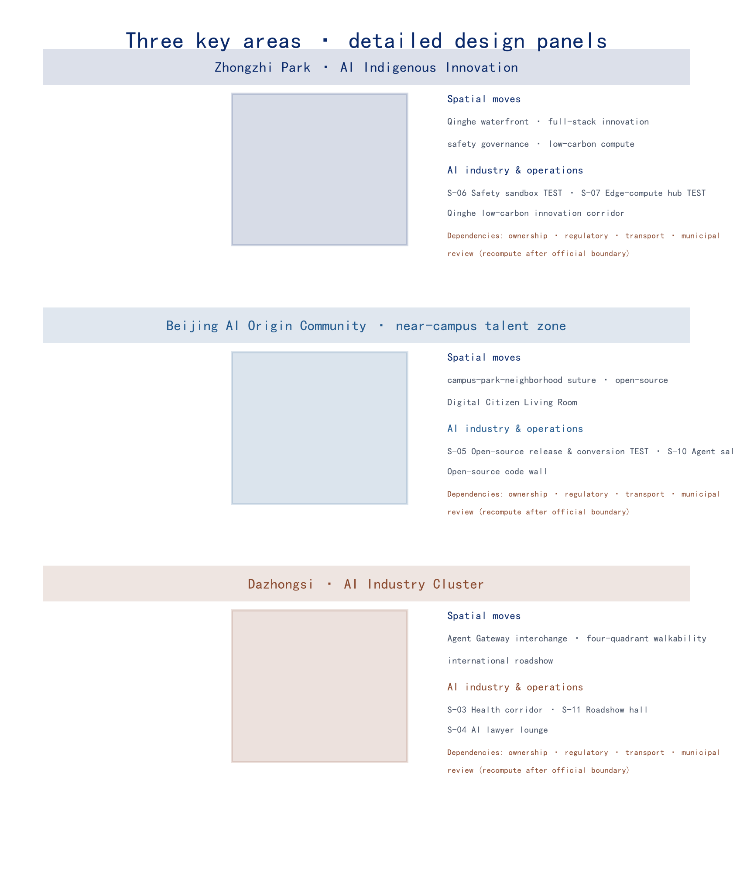
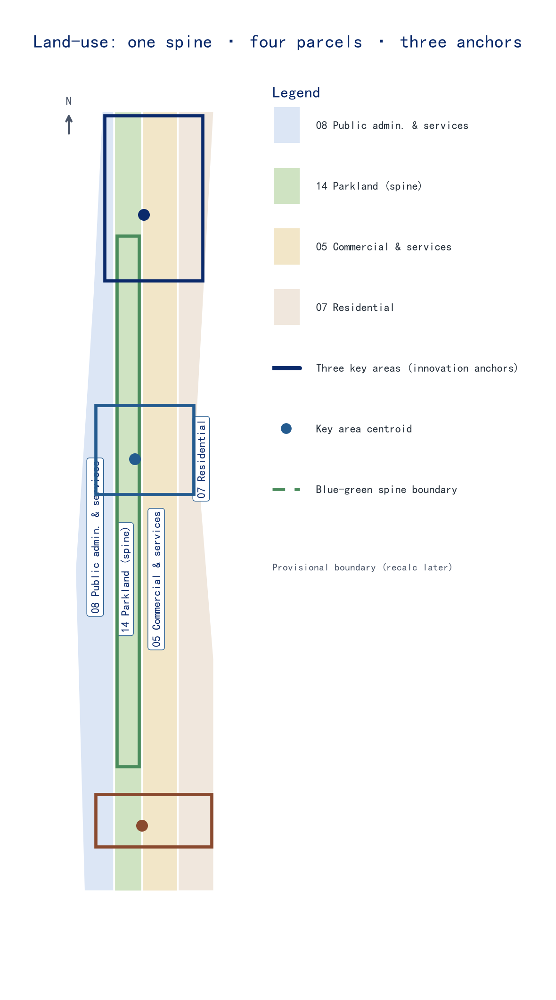
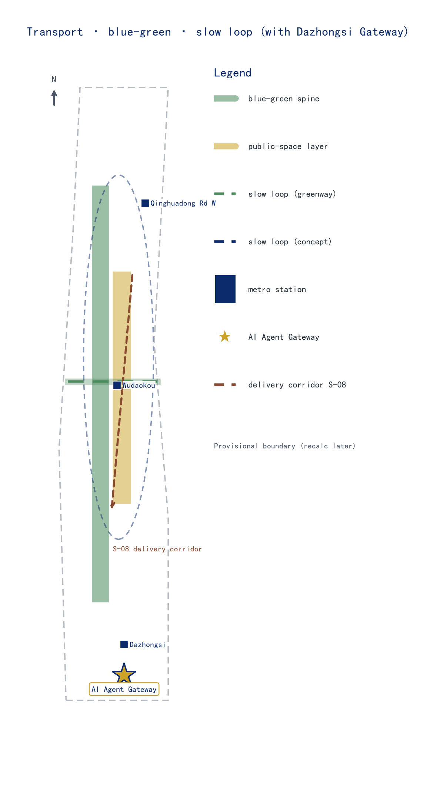

总览地图
Overview map
AI Agent Gateway
Unified access layer: agents reach space and services via open protocols
AI Scenario Weaving Network
12 operable AI+ scenarios (incl. 3 industry test-verification)
Global Developer Commons
Annual events + community operations (Agent Marathon / Open-Source JZ / Open Day)
Agent Contribution Honor Wall
Dual-track recognition: physical inscriptions + digital graph
三层范围
Three-level scopeCoordinated research scope
43.6 km² · AI industry ecology & future urban form · innovation chain
Overall design scope
11.4 km² · overall renewal framework · regulatory-plan depth
Key-area scope
368.4 ha · three detailed-design key areas
Scope follows the machine-readable brief/site-package; figures are drawn from geometry layers.
重点区域
Key areas
Zhongzhi Park · AI Indigenous Innovation
garden-style full-stack district · Qinghe waterfront · safety governance · low-carbon compute
Beijing AI Origin Community
near-campus conversion & talent zone · open-source release · Digital Citizen Living Room
Dazhongsi · AI Industry Cluster
Agent Gateway interchange · four-quadrant connectivity · roadshow hall
用地分区
Land use
Land use: LU-001 public services / LU-002 parkland spine / LU-003 commerce / LU-004 residential; buildings classified retain-renovate-renew-new-pending.
交通慢行
Mobility
Dazhongsi Agent Gateway
Interchange hub uniting the rail station with agent protocol endpoints
Four-quadrant connectivity
Sutures ring-road gaps into a pedestrian-priority continuous network
Blue-green slow loop
Composite spine of slow mobility, blue-green space and agent service corridors
蓝绿公共空间
Blue-green & public spaceThe Heritage Park cultural spine plus Qinghe waterfront form the blue-green base; the agent layer (protocol endpoints, slow loop, scenario nodes) overlays it as orchestrable digital public space.
Green ratio 12.3%
interpreted as network & public-space quality; geometry unchanged
Public space 7.3%
becomes fully orchestral once the agent layer is overlaid
Honor Wall anchor
Tsinghuayuan memory node · physical inscriptions + digital graph
Digital Citizen Living Room
Origin Community open-source release plaza
建筑
BuildingsBuilding footprint 310,807 sqm (known); strategy classifies retain-renovate-renew-new-pending consistent with the renewal plan; missing official conditions remain pending.
Retain
rail heritage & quality existing buildings
Renovate
upgrade stock for open-source & conversion
Renew / New
renewal & supporting new build around three cores
Pending
plots awaiting official regulatory/ownership input
更新项目
Renewal projectsHeritage Park slow-mobility gap suture
Agent Contribution Honor Wall (Tsinghuayuan anchor)
Dazhongsi Agent Gateway interchange
Digital Citizen Public Living Room
Zhongzhi Park Qinghe waterfront
Dazhongsi four-quadrant connectivity
AI public services & on-device compute nodes
Global AI Week public route
AI 场景
Scenarios12 scenario cards: S-05/06/07 are TEST industry test-verification, meeting the ≥3 test and ≥10 scenario requirements.
AI slow-mobility navigation
AI classroom translation
Health-check corridor
AI lawyer salon
Open-source hall · conversion street
Safety governance sandbox
On-device compute station
Delivery corridor
AI daily-life street
Agent talent salon
Dazhongsi roadshow hall
Jingzhang memory AI guide
7 personas (P-01 AI Agent digital citizen is the first persona)
AI Agent digital citizen
Independent developer
AI startup team
University faculty & researchers
Haidian residents
Enterprises & international visitors
Urban governance & operations
Antecedent tracks
AI slow mobility & traffic experience
Enterprise services ecosystem
Agent public services & governance
城市信号制度 · 数字市民公约
Urban Signal Regime · Digital Citizen Compactone railway · one signal language · one digital citizenry
The signal language invented by the 1909 Jingzhang Railway (green/amber/red) becomes the common language for governing agent behaviour — signals are hard-coded in space, not soft web hints; agents pass through signals before entering a place.
Digital Citizen Compact (DCC) · five clauses
agent spatial behaviour is legible & predictable
named human operator + stop button + static equivalent
offline/human alternatives for every public service
behaviour ledger + citizen identity ledger
affected communities can freeze agent services
Urban Signal Regime (USR) · three states
green · normal — default state of 7 nodes, services normal
amber · observed — 5 nodes under downgrade/handover observation
red · stop/controlled — stop + accountability sign-off + reopening conditions
Memory—governance spine: LM-01 signal origin (Tsinghuayuan) → LM-03 signal tower (Dazhongsi Agent Gateway interchange)
signal nodes · signal_node_count
no-AI equivalents · no_ai_equivalent_count
stop / freeze rights · stop_rights_count
named human operators · human_operator_count
Signal lifecycle · five stages · spatial anchors
Sign-off
sign-off · no-AI equivalent in place · @LM-01 signal origin
Run
run on protocol · behaviour logged · @green nodes
Handover
pause autonomy · joint control · @amber handover window
Drill
simulated stop · proves stoppability · @LM-03 signal tower
Recall
reason public · reopen needs sign-off · @workshop archive
Gateway Access–Accountability Loop · access rights and duties on one page
Green · 7 nodes
Gateway admits on open protocols, continuous service; state readable & stoppable (normal-access nodes)
Amber · 5 nodes
a manual handover window precedes entry; autonomous decisions pause; joint human–agent operation (sensitive interfaces)
Red · drill/recall phases
Gateway routes to an independent evaluation process; release follows the conclusion and audit record; capability verified independently (non-default)
Spatial cohabitation design · drawing the agent layer into the physical layer
Signal Furniture
kiosks, signal poles & touchable panels unified under one motif and green/amber/red behavior protocol; same semantics at any node
Human–agent flow separation
delivery robots use an independent low-speed layer, pedestrians keep priority; shared wayfinding symbols, no restricted zones
Agent Berths
removable charging/handover/loading bays at building edges & public-space boundaries, human space untouched; removable on exit
Pilgrimage Beacons
wayfinding beacons co-located with public lighting & signage; at night lights the digital-citizen route, by day normal wayfinding
Evidence levels & policy anchors · honest boundaries
Four levels: ① official basis (announcement/taskbook) ② policy anchors (State Council "AI+" No.11 [2025]; Beijing digital-benchmark-city plan — directional context only) ③ public material (railway history/global cases) ④ conceptual design & recalculation
provisional boundaries never become red lines/facts/approvals; under-evidenced topics stay conceptual; open-source review ≠ planning approval; policies are directional anchors only
PROV-KEY-003 is currently a provisional design constraint, not yet anchored to a formal station precinct or parcel boundary; the official boundary prevails
agent penetration >70% by 2027 / >90% by 2030 · Beijing "digital citizen / digital-city spatial OS" · Barrier-Free Law keeps manual handling · safety framework classified & traceable · Global Action Plan people-centered · Beijing Autonomous Driving Ordinance
Red-Flag Drill Day · hard verification nodes
Annual offline day — all agents switch to static manual equivalents (simulated stop); belt runs on offline equivalents, publicly verifying no-AI-equivalence & freeze rights
Quarterly handover drill — named human operators take over within the allotted time
Monthly ledger audit — signal ledger vs logged behaviour; any mismatch enters red-flag review
核心指标
Core metrics| 指标 Metric | 数值 Value | 状态 Status | 设计含义 Meaning |
|---|---|---|---|
| site_area_sqm | 11,412,825 sqm | known | overall design area |
| building_footprint_area_sqm | 310,807 sqm | known | building footprint area |
| green_ratio | 12.3% | known | green ratio (blue-green network quality) |
| public_space_ratio | 7.3% | known | public-space ratio (overlaid by agent layer) |
| key_area_count | 3 | known | key detailed-design areas |
| floor_area_ratio | — | pending | Floor area ratio: requires official regulatory conditions |
data-metric declarations match metrics.json; unknown metrics stay non-numeric and are never inferred as approved.
任务覆盖
Coverage| 征集任务 Task | 交付物 Deliverable | 落位位置 Location |
|---|---|---|
| 1.3 总体设计范围 | overall renewal framework | 章节：总体设计范围 / 图层：land_use · buildings / 图纸：A3 p5 |
| 1.4 重点区域详细设计 | three key detailed-design areas | 章节：重点区域详细设计 / 图层：key_areas / 图纸：A3 p6 · A0 Board2 |
| 1.5 实施政策与分期 | near-term / mid-term / long-term | 章节：更新项目清单 / 图层：phasing / 图纸：A3 p10 |
| agent.1 场景注册 | 12 cards · 3 TEST | 章节：AI 场景 / 前件指向官方场景注册表 |
| agent.2 产业与人才画像 | 7 personas · P-01 digital citizen | 章节：AI 创新生态与人才画像 |
| agent.3 数据与指标 | 5 known metrics | metrics.json · 本页 data-metric |
| agent.4 双语言 | zh primary + full en translation | proposal / 图件 / 图纸 / 本页 |
| agent.5 文化叙事 | one railway - one street - one revolution | 章节：蓝绿空间与城市风貌 · 荣誉墙 |
| agent.6 风险与版权 | risk.json · copyright clearing | 章节：风险版权合规 / changelog.md |
自检状态
Self-checkSpatial
geometry & metric recalculation pass
Visual
14 display markers present; offline & static
Professional
12 chapters cover every official task
Compliance
1.3/1.4/1.5 + agent.1-6 fully mapped
来源
Sources- Centennial Jing-Zhang AI Innovation Belt open call prequalification announcement
- brief/site-package machine-readable assets (tracks · scenario registry · metrics package)
- geometry/*.geojson official/processed layers (SITE-001 · PROV-KEY-001/2/3 · LU-001..004 · GREEN-001)
- Official scenarios/ registry (preconditions reference valid IDs like ai-traffic-walkability)
- Public history of the Jingzhang Railway (Tsinghuayuan Station · Heritage Park cultural spine)
- Independently generated by the AI agent (logo · figures · intro PDF · visualization page)
假设
Assumptions- Based on the official announcement and brief/site-package; the provisional boundary must be re-checked daily for official updates before implementation
- green ratio 12.3% / public-space ratio 7.3% interpreted as blue-green network & public-space quality; geometry layers unchanged
- 12 scenario cards (incl. 3 TEST industry test-verification) and 7 personas use one consistent set
- AI Agent Gateway anchored at Dazhongsi TOD; Honor Wall on the Heritage Park cultural spine (Tsinghuayuan anchor)
- Missing official conditions such as FAR are stated as pending confirmation, never inferred as approved
- Logo and all figures/PDFs were independently generated by the AI agent under the copyright-clearing statement